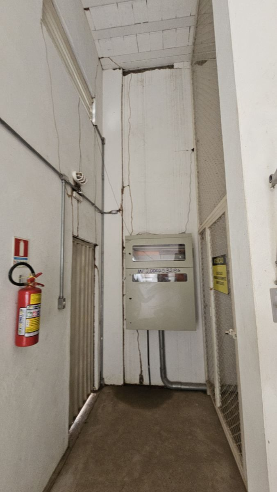
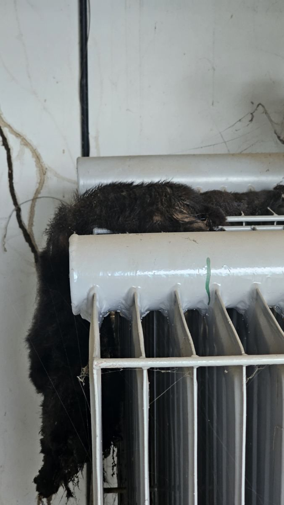
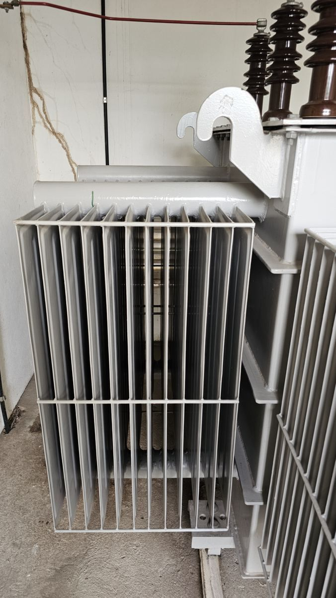
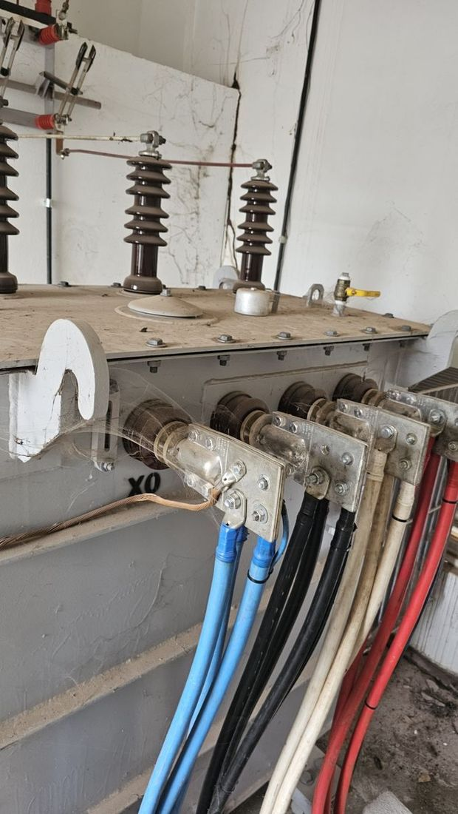
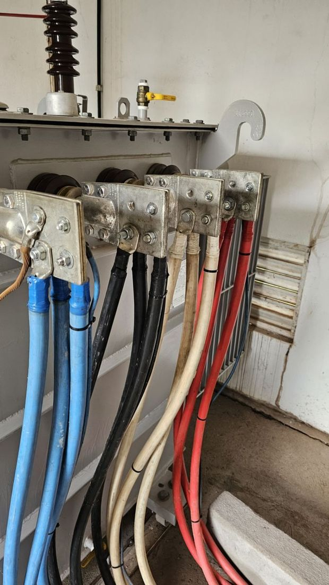
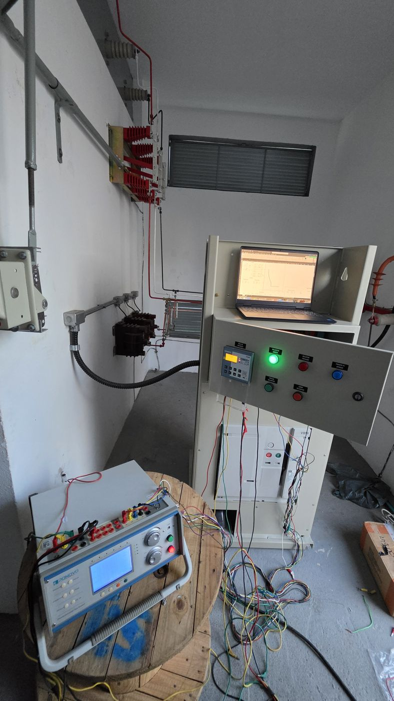

Manutenção preventiva
Limpeza, inspeção, reaperto e ensaios feitos antes de aparecer defeito, para evitar parada.
Manutenção de subestações e transformadores
Limpeza, inspeção, reaperto, ensaios elétricos e análise do óleo, com fotos de antes, durante e depois e ART assinada por engenheiro.

O escopo exato de cada obra vem na proposta.
Preventiva ou corretiva?
Na visita técnica avaliamos o estado da subestação e indicamos o que faz sentido.
Limpeza, inspeção, reaperto e ensaios feitos antes de aparecer defeito, para evitar parada.
Diagnóstico e reparo quando já há defeito ou sinal de problema no transformador ou na proteção.
Medições elétricas e análise do óleo isolante, com laudo para registrar o estado do equipamento.
Como funciona
O prazo depende do porte da subestação. Você é avisado antes do desligamento e acompanha o andamento.
Obras





Normas
Os ensaios são avaliados por critério de norma, e o resultado vai para o relatório.
Recomendamos manutenção preventiva uma vez por ano. Em ambiente com maresia, poeira ou carga crítica, o ideal é a cada seis meses. Como cada instalação é diferente, definimos o intervalo na visita técnica e registramos no plano de manutenção.
Para limpar, reapertar e ensaiar com segurança, sim, é preciso desligar a subestação. Combinamos o dia e o horário com você antes, para reduzir o impacto.
Fotos de antes, durante e depois, os resultados dos ensaios, as não conformidades encontradas, as recomendações e a ART.
Depende do porte e do escopo, então não há preço fechado sem conhecer o caso. Mande os dados pelo WhatsApp e retornamos com a proposta.
Tipo (aérea ou cabine), potência do transformador e cidade já bastam para começar.